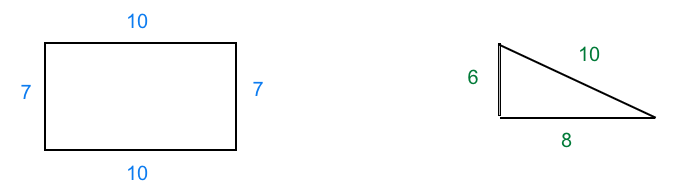

Next, you will work on some math problems about the PERIMETER of different figures.
The PERIMETER of a figure is the sum of the lengths of all sides. For example:

| The perimeter of this rectangle is: 10 + 10 + 7 + 7 = 34 |
The perimeter of this triangle is : 6 + 8 + 10 = 24 |
Remember that there is a Hint button at the left that gives you hints. Click on it when you need any help to solve the problem.
Click New Problem to continue